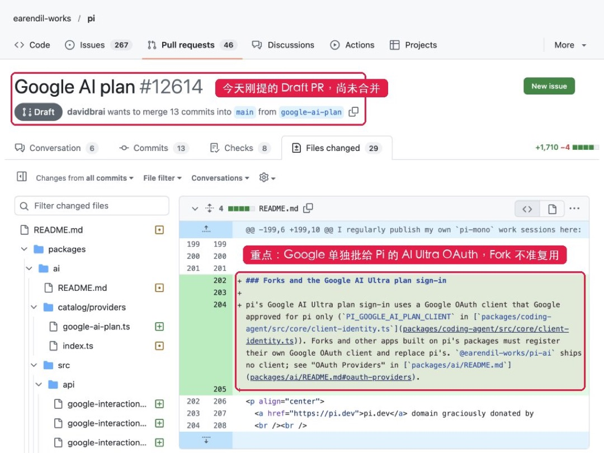
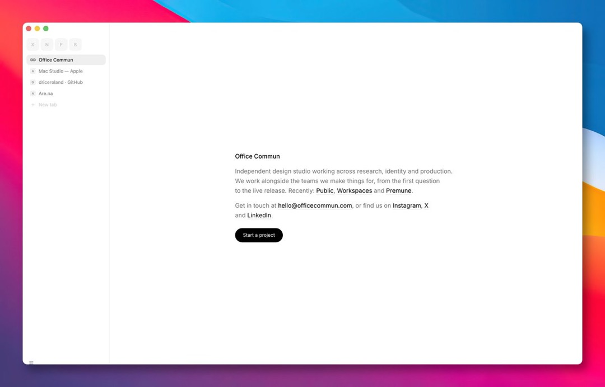
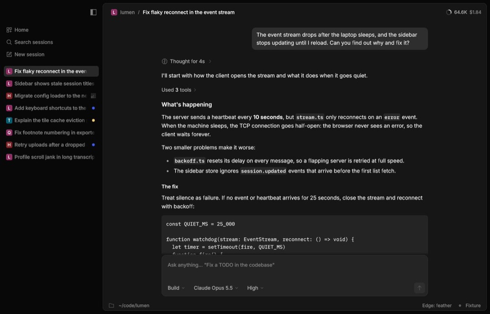
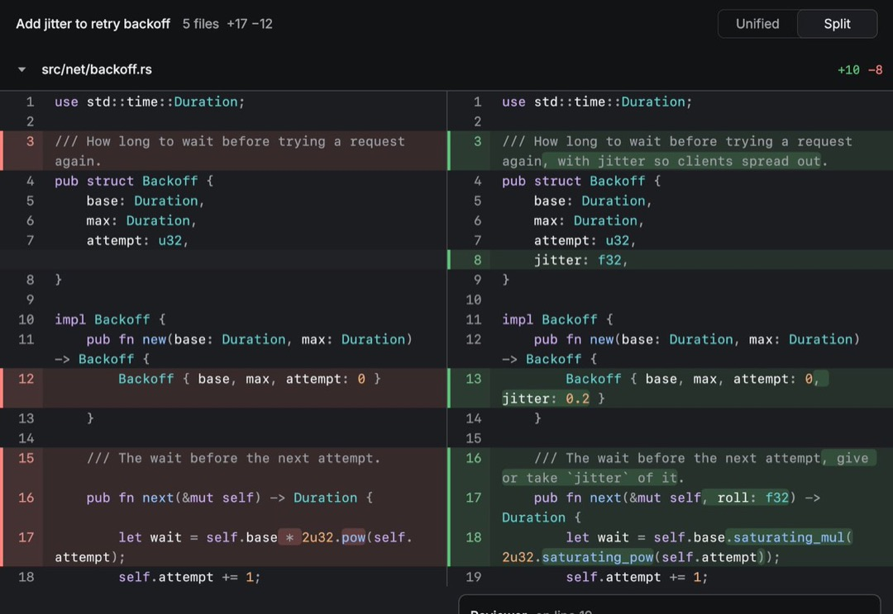
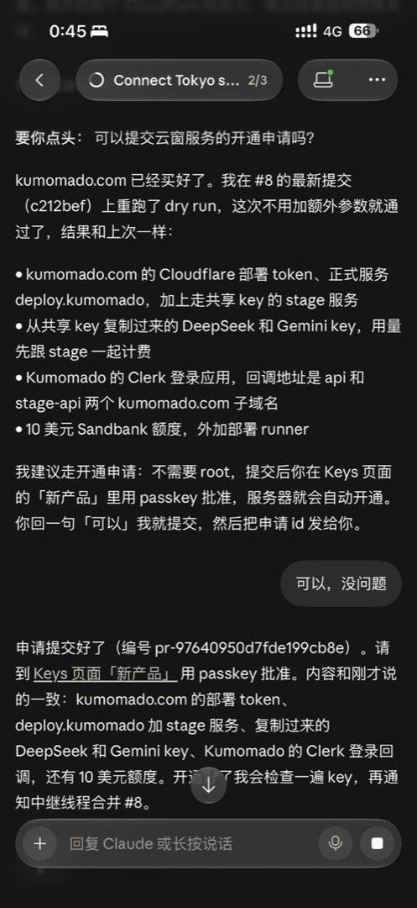
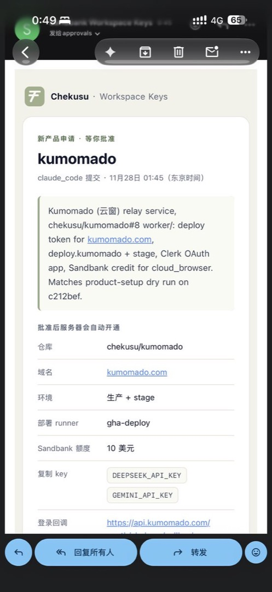
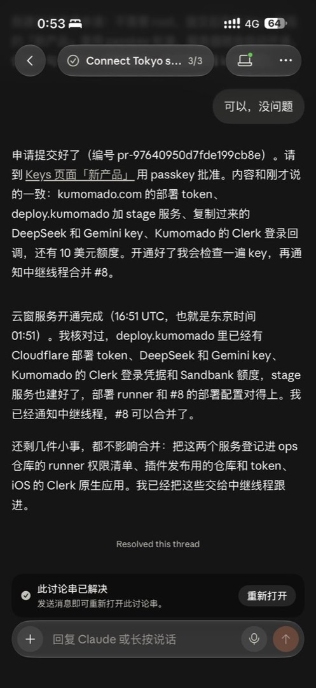

本期速览
01 Pi 获 Google OAuth 官方订阅登录
03 Search 用 WebKit 打造 14MB 极简浏览器
04 Rune 用 Rust 跨五端 GPU 界面
05 wanman 将 App 交付压缩至 30 分钟
01｜Pi 获 Google OAuth 官方订阅登录
来源（X） · @ohayou792 · 2026-11-27 22:29
刚翻完 Pi 仓库今天新挂出来的 12614 号 Draft PR，代码还没合进 main 分支，但 Google AI Ultra 订阅登录已经实现了。
为什么 Pi 能直接接上 Google 官方 OAuth 订阅登录？
原因很简单，Pi单独向 Google 提交了官方 OAuth接入申请并且通过了。
Google 这个申请要求每个工具自己去建独立的桌面端 OAuth 应用，一家一家单独提交审批。
通过之后，登录时会把刷新令牌绑定在本机生成的密钥上，每次续期都要带本机签名校验，请求直接走 Google 新开的个人配额接口，目前只针对 AI Ultra 订阅开放，Pro 用户暂时未开放。
Pi 团队甚至专门在 README 里加了一段说明，写得很清楚：
这个登录客户端是 Google 单独批给 Pi 的，任何人 fork 仓库或者基于 pi-ai 自己做工具，都必须重新向 Google 申请，不准复用 Pi 的凭据。
想看代码细节的可以直接去 GitHub 搜 earendil-works/pi，点进 PR 12614 或者切到 google-ai-plan 分支，里面的 README 改动和 google-ai-plan.ts 写得清清楚楚。
顺着这套个人配额接口的特征，我把 GitHub 全网翻了一遍，看看还有谁拿到了审批。
除了 Pi，目前公开仓库里能查到走通这套官方通道的开源项目，只有 Nous Research 家的 Hermes Agent。
仓库里叫 Solstice 插件，前几天刚切到和 Pi 一模一样的无状态接口，不过看前两天的 issue 反馈，目前还卡在测试白名单阶段，普通账号直接登还是会被拦下来报 403。
OpenCode 的第三方分支 Shuvcode 虽然代码里也接上了 Solstice，实际是绕道借用了 Nous Portal 的登录通道，并没有拿到 Google 的单独批准。
至于其他开源Agent：OpenClaw、Cline、Roo Code、Zed、Goose 这些目前在公开仓库里全都没有这套官方接入的痕迹。
这么一来，以后第三方工具想接 Google 订阅，只能一家一家排队过审、单独领凭据，出了问题 Google 随时能按单个应用停权。
之前那些靠逆向抓包和共享凭据撑起来的野路子插件，后面基本走不通了。


02｜13 个企业知识库 RAG 框架与工具
来源（X） · @Suercha007 · 2026-11-27 21:52
很多朋友问我知识库怎么做，其实知识库和业务场景是强绑定的，不同场景，不同类型的文档，对应的解析、持久化、构建方法甚至召回的逻辑都不一样，不能一概而论！
不过市面上通用的RAG框架和工具，对自研知识库体系是有所帮助的，我们可以借鉴其中的分析和召回理论，针对性的去优化。
1、WeKnora（腾讯，3.8 万星）：RAG 查询、Agent 干活、Wiki 整理三种模式共用一套知识库，飞书、企微、Confluence 直接同步。
https://github.com/Tencent/WeKnora
2、RAGFlow（9.5 万星）：1.0 版能把文档编译成 Wiki、图谱、时间线、Skill 七种产物，还有四档思考深度的 Agentic RAG。 https://github.com/infiniflow/ragflow
3、语析 Yuxi（7.8 千星）：多租户企业智能体基座，Milvus 混合检索加可选 Neo4j 图谱，带沙盒执行和命令审批。
https://github.com/xerrors/Yuxi
4、MaxKB（2.3 万星）：界面最像传统企业软件，上手最快，注意它是 GPL 协议。
https://github.com/1Panel-dev/MaxKB
5、PipesHub（4.2 千星）：权限感知的企业搜索，连 50 多个系统，同一份上下文既能给人答也能通过 MCP 喂给自己的 Agent。
https://github.com/pipeshub-ai/pipeshub-ai
6、PageIndex（4.1 万星）：不建向量索引，给文档建一棵可推理的目录树让模型顺着找。
https://github.com/VectifyAI/PageIndex
7、LightRAG（4.1 万星）：轻量图谱增强，速度是卖点，换了 embedding 模型会直接拒绝启动。
https://github.com/HKUDS/LightRAG
8、GraphRAG（微软，3.7 万星）：社区检测加多层摘要，全局性问题答得好，代价是慢和贵。
https://github.com/microsoft/graphrag
9、RAG-Anything（2.5 万星）：图片、表格、公式都当一等公民处理的多模态 RAG。
https://github.com/HKUDS/RAG-Anything
10、PixelRAG（1.1 万星）：直接把页面渲染成图再理解，绕开 PDF 和 HTML 解析这一整层。
https://github.com/StarTrail-org/PixelRAG
11、Graphiti（3.3 万星）：实时知识图谱，边聊边更新。
https://github.com/getzep/graphiti
12、graphify（15.4 万星）：Claude Code 里敲一下，整个文件夹变成知识图谱，官方说比直接读原文件省 71.5 倍 token。
https://github.com/Graphify-Labs/graphify
13、llm_wiki（2.2 万星）：把一堆文档变成互相链接的 Wiki，而不是一堆向量。
https://github.com/nashsu/llm_wiki
03｜Search 用 WebKit 打造 14MB 极简浏览器
来源（X） · @GitHub_Daily · 2026-11-28 08:00
它直接用 Mac 系统自带的 WebKit 内核，也就是 Safari 用的那套，不用再额外装一份 Chromium，所以打开很快。
界面只剩一排标签页和网页本身，没有工具栏、起始页和推荐栏。地址栏输网址就跳转，输文字就直接搜索。
GitHub：https://github.com/driceroland/Search
广告拦截默认开着，追踪器在网络请求阶段就被挡掉，网页还没开始渲染。
碰到 Cookie 弹窗、订阅浮层这类碍眼的东西，按个快捷键点一下就隐藏了，下次再打开这个网站还是隐藏的。
Chrome 商店里的扩展也能装，粘贴链接就行。阅读模式、视频小窗、两个网页并排这些都是内置的。
历史记录和密码只存在本机和系统钥匙串里，不上传任何使用数据。整个项目大约 4.2 万行 Swift 代码，对一个浏览器来说，这个体量我觉得挺克制的。

04｜Rune 用 Rust 跨五端 GPU 界面
来源（X） · @QingQ77 · 2026-11-28 07:34
https://github.com/anomalyco/rune


05｜wanman 将 App 交付压缩至 30 分钟
来源（X） · @turingou · 2026-11-28 00:55
批准完之后，从网站的服务端密钥、iOS/Android 应用创建、构建、测试与生产环境部署、CI/CD，直到自动化提交内部外部 TestFlight 和正式商店审核，全部流程都是自动化的。
一个全新的 App，从年初需要一到两周不断在聊天中研发，到一个月份前的一天研发，到现在 30 分钟之内就可以完成所有工作！图中就是我新做的一个 App，用来通过一个垂直的个人助理，管理我云端 Agent 环境中所有的浏览器，确保他们可以同步所有的登录状态，使用我的出口 IP，并且能够在我的观察下自动化操作。
借助于这套全自动工作体系，我相信在明年我应该可以成功发布远不止 300 个应用和网站。


